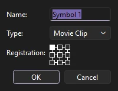
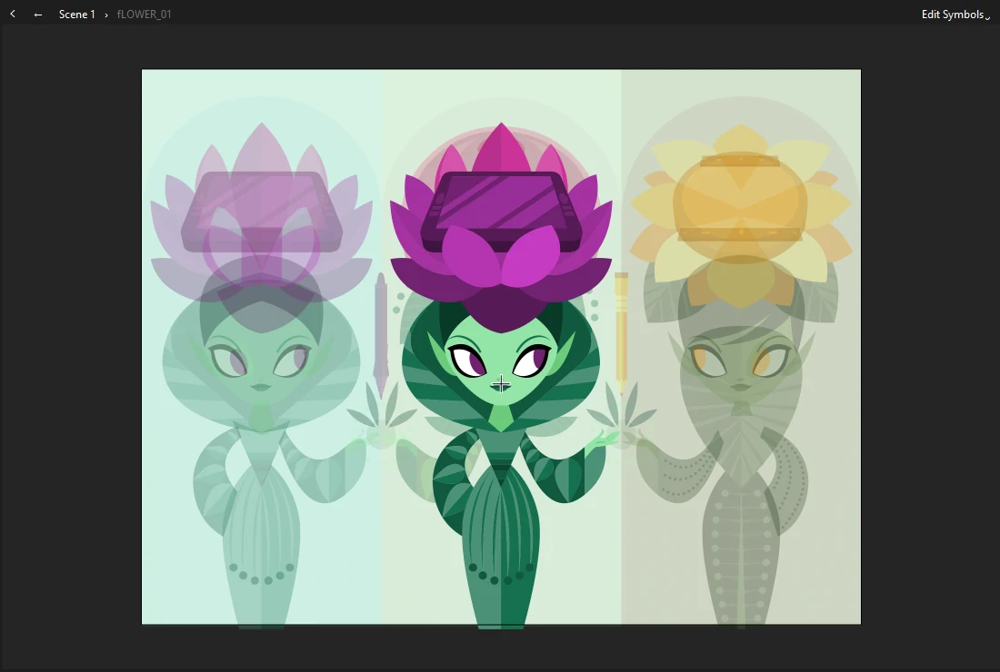
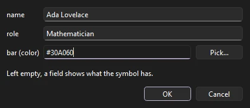
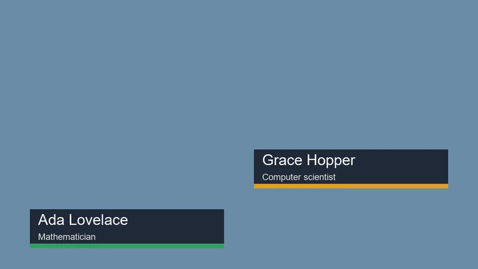
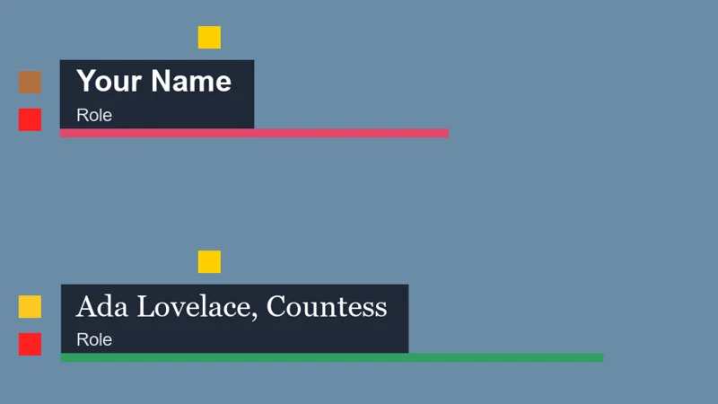

Symbols
Symbols and instances
A symbol is artwork you make once and use as often as you like. Each use is an instance. Change the symbol and every instance changes with it; move, scale, tint or animate an instance and the symbol stays the same.
Symbol types
| Type | Best for | Timeline |
|---|---|---|
| Graphic | Character parts, props, lip-sync mouths: anything animated in step with the main timeline | Plays in sync with the timeline it is placed on, so you see its animation as you scrub |
| Movie Clip | Self-contained loops, and anything that needs filters or 3D rotation | Plays on its own clock, independent of the timeline it is placed on |
| Button | Interactive content for players that support it | Four frames: Up, Over, Down and Hit |
On the stage, a movie clip shows its first frame while you edit and scrub. Its own timeline plays while the document plays (Enter) and when you export, and with on it follows the stop() and goto calls in its frame scripts (see Frame scripts). Use graphic symbols when you want to see the animation frame by frame as you scrub.
Create a symbol
From artwork on the stage
- Select the artwork.
- Choose (F8), or right-click it and choose Convert to Symbol.
- Give the symbol a name, choose its type, and click a square in the Registration grid to set where its origin will be. The origin is the point the instance rotates and scales around by default.

The selected artwork is replaced by an instance of the new symbol. Phoenix remembers the type and registration you chose for next time. Names must be unique in the library.
From scratch
Choose (Ctrl+F8), name it and pick its type. Phoenix opens the empty symbol so you can draw in it. It is added to the library; drag it onto the stage to use it.
Edit a symbol
There are two ways to open a symbol:
- Edit in place
- Double-click an instance on the stage, or choose . The rest of the stage stays visible but dims, so you can draw the symbol in context.
- Edit on its own
- Choose (Ctrl+E), double-click the symbol in the library, or pick it from the Edit Symbols list on the edit bar above the stage, just left of the stage controls.

Inside a symbol you have its own timeline and layers, and all the tools work as usual. A crosshair marks the symbol's origin.
To go back, double-click an empty part of the stage, click the Back arrow or a name in the edit bar, or press Ctrl+E (which reads Edit Document while you are inside a symbol). Symbols can contain other symbols, and the edit bar shows each level you have opened.
Instance properties
Select an instance to see its settings on the Object tab:
- Instance name
- For movie clips and buttons, a name that scripts can use to find the instance. It is in the header at the top of the tab.
- Symbol and Swap...
- The symbol this instance shows. Swap... replaces it, keeping the instance's position, transform and effects.
- Type
- Whether this instance acts as a graphic, movie clip or button, independent of the symbol's own type.
- Position and Size
- X, Y, width and height.
- Color Effect and Display
- Brightness, tint, alpha and blend modes. See Filters, blends and color effects.
- Filters
- Drop shadows, blurs, glows and more, for movie clips and buttons.
Looping for graphics
A graphic instance plays its symbol's frames in step with the timeline it is on. The Looping section controls how:
| Option | Plays |
|---|---|
| Loop | From the first frame to the end, then starts again |
| Play Once | To the end, then holds the last frame |
| Single Frame | Holds one frame, which is how you switch mouth shapes or hand poses |
| Loop Reverse | Backward to frame 1, then starts again from the end |
| Play Once Reverse | Backward to frame 1, then holds it |
| Ping Pong | Forward to the end, then backward, and again |
First sets the frame of the symbol to start from. Last sets where playing stops or turns around: the loops run between First and Last, and the Play Once options hold on Last. Leave Last at 0 to play to the symbol's end.
Display
The Object tab's Display section has the instance's blend mode, and for a movie clip or button, Visible: turned off, the instance is not drawn, though it stays on the stage for scripts. Reg X and Reg Y place the instance by its registration point rather than by the corner of its bounds.
The Frame Picker
When a symbol holds a set of poses, such as mouth shapes, the Frame Picker is the fastest way to choose between them. Open it from , select a graphic instance, and click a thumbnail to show that frame. The list beside Create Keyframe sets the instance's looping option. Check Create Keyframe to put each choice on a new keyframe at the playhead, which makes lip sync a matter of stepping through the timeline and clicking. To key a whole line of dialogue from a recording at once, see Lip sync.
Swap Symbol
lists every symbol with a preview. The current one is shown in bold. Pick another and click OK, or double-click it. Duplicate Symbol... makes a copy of the selected symbol to swap to, which is handy when one instance needs a variation.
Bitmaps swap the same way: select one or more bitmaps on the stage and choose , or click Swap... in the Properties panel. The new bitmap takes the old one's place, scale and rotation.
Templates
A symbol can be a template: one lower third, title card or sign that each instance fills in with its own words and colors. Its named parts are its fields:
- A dynamic text field with an instance name is a text field. Each instance can give it other words, in the field's size and color, and another font if it likes (the name font box under the field, or a
name.fontcolumn in a CSV). - A movie clip with an instance name is a color field. Each instance can tint it all one color: a bar, a badge, a background.
- A named movie clip with more than one frame is a slider. Each instance picks the frame it holds on: a star rating, a level, a pose, a flag.
- A slider with two frames is a checkbox: off shows the first frame, on the second. A "Live" badge, a logo shown or not.
- A slider whose frames have labels is a list of them: label the frames Bronze, Silver and Gold, and each instance picks one by name. A CSV row can name the label too.
- A named movie clip that holds just a bitmap is an image field. Each instance gives an image file to show in the bitmap's place, at its size: a photo, a logo, a team badge. A path is read from the document's folder unless it is a whole one.
Select an instance and fill them in under Template in the Properties panel, where each field shows as a box, a color, a frame or an image to browse for. (also on the stage's right-click menu) fills in several selected instances at once. A field left empty shows what the symbol has. Fields inside nested symbols count too, and an outer instance's values win over an inner one's. Letter animators on a text field animate the words an instance gives it.


To make many versions at once, put the values in a spreadsheet saved as CSV: the first row names the fields, and each row after it is one version. A file column names each output; a slider takes a frame number, and an image a path read from the CSV's folder. renders the movie once a row, as MP4, MOV, GIF or a PNG sequence, every instance's fields filled from the row (an empty cell leaves each instance's own value). The same works from the command line: Phoenix render lower-third.fla --data people.csv --out renders/. To render the rows in the background while you work, click Add Data... in .
file,name,role,bar
ada,Ada Lovelace,Mathematician,#2060C0
grace,Grace Hopper,Rear Admiral,#C02040Fit what it is given
A longer name needs a longer bar, and a lower third held on screen longer should not slow its slide in. Two things make a template fit:
- Pin to Text. Inside the symbol, right-click the bar or plate behind a text field and choose Pin to Text.... Pick the field and how to follow it: stretch to its width (or height, or both), or move with one of its edges. As an instance's words come out longer or shorter than the symbol's own, the pinned part keeps the same room around them.
- Responsive time. In a graphic symbol, label the frame where the middle starts
stretchand the frame where the ending startsoutro. An instance of it on a longer or shorter span of frames plays the start and the ending at their own speed and stretches or squeezes the middle to fit, so the slide in and the slide out keep their timing however long the title stays up.

Templates are Phoenix's own: another app opening the FLA file shows each instance as the symbol is drawn. writes the values in: each instance shows a copy of its symbol with its words, fonts and colors, and its sliders as graphics held on their frames, one copy for each different set of values. Pinned parts are moved or stretched to where they show beside each instance's words, with a keyframe more where that changes along the span, and an instance of a symbol with responsive time shows a copy laid out for its span, the original held on each frame it shows, so the start and the ending keep their speed there too. Image fields show the symbol's own bitmap there.
Break apart an instance
(Ctrl+B) replaces an instance with a copy of the artwork from the frame it shows, with its color effect applied. The symbol itself is not changed.
9-slice scaling
A symbol with 9-slice scale guides, such as a panel or a button frame, keeps its corners at their own size when a movie clip instance of it is stretched: the edges stretch one way and the middle both. Phoenix draws this on the stage and in exports, including on instances that are rotated or skewed, or that have a color effect, filters or a blend mode. Graphic instances of the symbol scale as a whole.
- Right-click the symbol in the library and choose Properties....
- Check Enable guides for 9-slice scaling and click OK. The guides start a third of the way in from each edge of the art.
- Edit the symbol (double-click it in the library, or an instance on the stage). The four guides show as dashed lines.
- With the Selection tool, drag each guide to where the corner should end: the left and right guides across, the top and bottom ones up and down. Each move is one step to undo, and a guide stops short of its partner.
The same dialog sets the symbol's type (movie clip, button or graphic) and its ActionScript class.